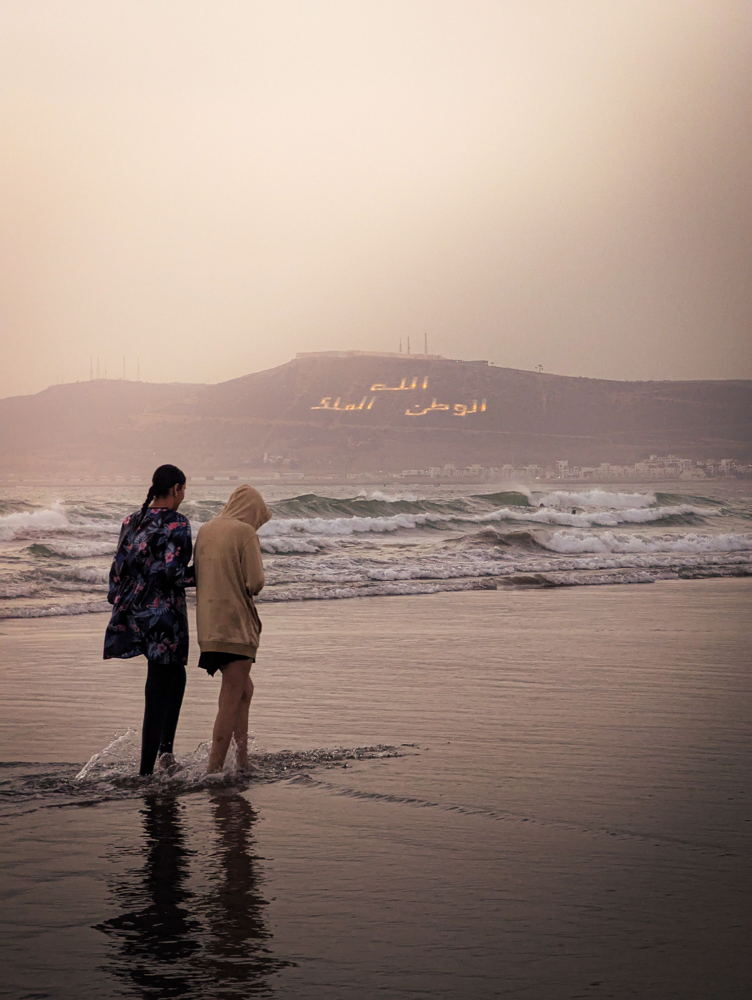
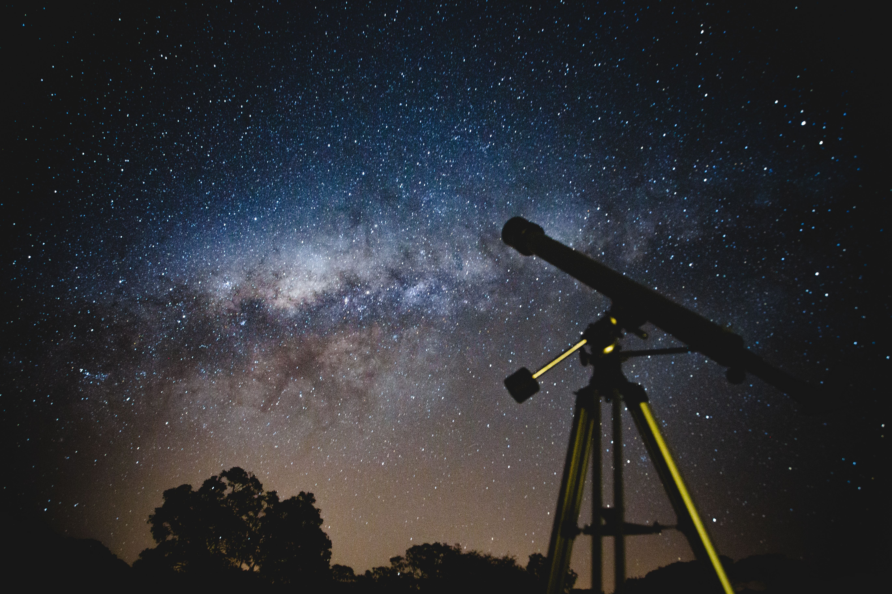

Je suis une femme marocaine de 40 ans, originaire de la ville d’Agadir. Je vis en France depuis 2018, je suis également maman d'un petit garçon de deux ans. Aujourd'hui, ma vie est partagée entre mes études, ma famille, mes projets personnels et mes responsabilités quotidiennes.

J'ai effectué mes études au Maroc, où j'ai obtenu mon baccalauréat en 2004. J'ai ensuite poursuivi mes études universitaires dans le domaine de l'économie et de la gestion. J'ai obtenu une licence fondamentale, option gestion, ainsi qu'une licence professionnelle en techniques de vente et fidélisation de la clientèle.
À 40 ans, j'ai décidé de commencer une nouvelle aventure en intégrant une première année de licence informatique (L1). C'est un nouveau domaine pour moi, qui me demande beaucoup de travail, de patience et de persévérance.
Je crois qu'il n'est jamais trop tard pour commencer quelque chose de nouveau. Chacun avance à son rythme. Pour moi, le plus important est de ne pas arrêter d'apprendre et de continuer à progresser.
Ma devise qui représente ma façon de voir la vie et qui me guide dans mon parcours est :« Mieux vaut arriver en retard que ne jamais arriver ».
J'ai plusieurs passions et centres d'intérêt qui font partie de mon quotidien. Chacun m'apporte quelque chose de différent et me permet de découvrir de nouvelles choses.
J'utilise Duolingo pour apprendre l'anglais. J'essaie de progresser petit à petit.
J'ai commencé à apprendre le piano toute seule, avec l'aide d'un livre. Je découvre progressivement les notes et les morceaux. Pour le moment, j'arrive à jouer trois morceaux.
J'aime également le yoga. J'essaie de pratiquer lorsque mon emploi du temps me le permet.
L'espace et l'Univers font partie des sujets qui éveillent ma curiosité. J'aime regarder des vidéos pour découvrir les planètes, les étoiles et les mystères de l'univers. Je dois avouer que je ne comprends pas toujours tout, car certains sujets sont assez compliqués, mais cela ne m'empêche pas de continuer à regarder. J'aimerais un jour pouvoir observer les étoiles et les planètes avec un télescope.

Mes journées sont généralement bien remplies. Entre les études, les responsabilités de la maison et mon rôle de maman, les journées passent très vite.
J’aime beaucoup passer du temps avec mon fils, notamment en lui lisant des histoires, et les week-ends nous aimons marcher dans la forêt, nous promener dans les parcs et profiter de la nature.
Sur le plan professionnel, je souhaite réussir mes études en informatique, poursuivre jusqu'au master et trouver un emploi.
Sur le plan personnel, je souhaite obtenir mon permis de conduire. J'aimerais progresser en anglais, continuer le piano, approfondir l'astronomie et apprendre à jouer aux échecs.
Mais si j'avais une baguette magique, je crois que je choisirais quelque chose d'encore plus ambitieux : devenir une scientifique très intelligente et connue, comme Marie Curie.C'est peut-être un rêve un peu fou 😂,mais après tout, pourquoi ne pas rêver grand ?
Entre ma famille, mes études, mes centres d'intérêt et mes projets, ma vie est bien remplie. Je n'ai pas besoin de tout réussir en même temps. L'essentiel pour moi est de continuer à progresser.